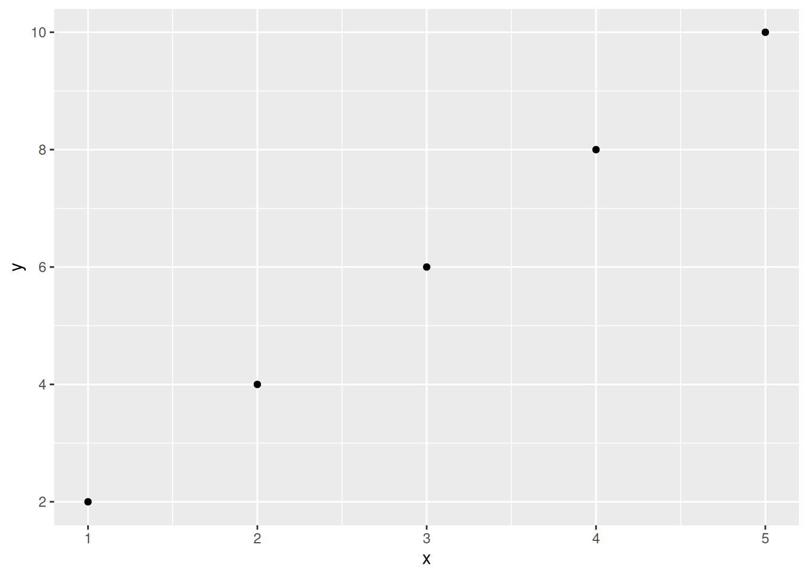
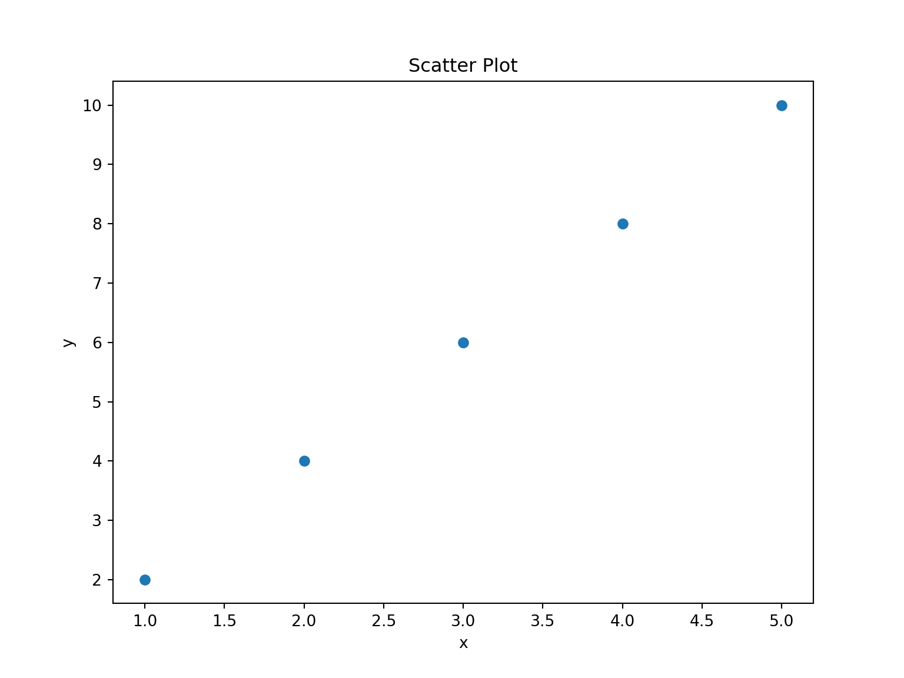

Quarto (Notebook)
History
- Markdown (2004)= Md =.md
- Markdown + R (2012) = RMarkdown =.Rmd
- Markdown + R + Other languages and command line utilities (2021) = Quarto = .qmd
Markdown documents
Markdown is a lightweight markup language for creating formatted text using a plain-text editor. John Gruber and Aaron Swartz created Markdown in 2004 as a markup language that is intended to be easy to read in its source code form (Wikipedia).
Dillinger (online markdown editor)
Headings
| Markdown Syntax | Output |
|---|---|
|
Header 1 |
|
Header 2 |
|
Header 3 |
|
Header 4 |
|
Header 5 |
|
Header 6 |
Text Formatting
| Markdown Syntax | Output |
|---|---|
|
italics, bold, bold italics |
|
superscript2 / subscript2 |
|
|
|
verbatim code |
Tables
Markdown Syntax
| Right | Left | Default | Center |
|------:|:-----|---------|:------:|
| 12 | 12 | 12 | 12 |
| 123 | 123 | 123 | 123 |
| 1 | 1 | 1 | 1 |Output
| Right | Left | Default | Center |
|---|---|---|---|
| 12 | 12 | 12 | 12 |
| 123 | 123 | 123 | 123 |
| 1 | 1 | 1 | 1 |
Link & Images
| Markdown Syntax | Output |
|---|---|
|
https://quarto.org |
|
Quarto |
|
|
Markdown Syntax |
Output  |
|
|
Equations
Use $ delimiters for inline math and $$ delimiters for display math. For example:
| Markdown Syntax | Output |
|---|---|
|
inline math: \(E=mc^{2}\) |
|
display math: \[E = mc^{2}\] |
RMarkdown documents
RMarkdown is a file format that allows you to create dynamic documents with R code embedded in them. It combines the features of Markdown, a simple formatting syntax, with R, a programming language for statistical computing and data analysis.
Insert R and Python code chuncks (Ctrl+Alt+I in RStudio)
Chunk 1: ToDos 1-4
```{r}
print('Hello Python', 2+2)
# Task 1
numbers <- c(,,,)
sum()
# Task 2
sqrt(c(4, 9))
help()
# Task 3
?rnorm
## Task 4
dato <- Sys.Date()
dato_aar <- substring(dato,1,4)
dato_aar_num <- as.numeric(dato_aar)
now <- as.numeric(substring(paste(Sys.Date()),1,4))
started <-
born <-
spent <- (now-started)/(now-born)*100
spent
``````{python}
print('Hello Python', 2+2)
# Task 1
numbers = [] # Empty list, equivalent to c() in R
sum(numbers) # Sum of the list
# Task 2
import math
print([math.sqrt(4), math.sqrt(9)]) # Square roots
help(math.sqrt) # Help for sqrt function
# Task 3
# Python doesn't have a direct equivalent to R's ?rnorm
# You can use help() or look up documentation online
from scipy import stats
help(stats.norm.rvs) # Similar to rnorm in R
# Task 4
from datetime import date
dato = date.today()
dato_aar = str(dato.year)
dato_aar_num = int(dato_aar)
now = date.today().year
# These variables need to be defined
started = None # Replace with actual year
born = None # Replace with actual year
# Calculate percentage of life spent
if started is not None and born is not None:
spent = (now - started) / (now - born) * 100
print(spent)
else:
print("Please define 'started' and 'born' years.")
```Chunk 2: Read R-script for your Rmarkdown document
```{r}
source("todos_JIH.R")
``````{python}
with open('todos_JIH.py', 'r') as file:
exec(file.read())
```Chunk 3: ggplot2 package for graphics
```{r}
library(ggplot2)
##### Create a simple data frame
data <- data.frame(
x = c(1, 2, 3, 4, 5),
y = c(2, 4, 6, 8, 10)
)
##### Create a scatter plot using ggplot2
ggplot(data, aes(x = x, y = y)) +
geom_point()
``````{python}
import matplotlib.pyplot as plt
import pandas as pd
# Create a simple DataFrame
data = pd.DataFrame({
'x': [1, 2, 3, 4, 5],
'y': [2, 4, 6, 8, 10]
})
# Create a scatter plot
plt.figure(figsize=(8, 6))
plt.scatter(data['x'], data['y'])
# Add labels and title
plt.xlabel('x')
plt.ylabel('y')
plt.title('Scatter Plot')
# Display the plot
plt.show()
```import matplotlib.pyplot as plt
import pandas as pd
# Create a simple DataFrame
data = pd.DataFrame({
'x': [1, 2, 3, 4, 5],
'y': [2, 4, 6, 8, 10]
})
# Create a scatter plot
plt.figure(figsize=(8, 6))
plt.scatter(data['x'], data['y'])
# Add labels and title
plt.xlabel('x')
plt.ylabel('y')
plt.title('Scatter Plot')
# Display the plot
plt.show()
Chunk 4: kable package for tables
```{r}
library(knitr)
library(kableExtra)
data <- data.frame(
Name = c("Alice", "Bob", "Charlie"),
Age = c(25, 30, 35),
Score = c(80, 85, 90)
)
kable(data, format = "html")
``````{python}
```Chunk 5:
```{r}
library(knitr)
library(kableExtra)
data <- data.frame( Name = c("Alice", "Bob", "Charlie"), Age = c(25, 30, 35), Score = c(80, 85, 90))
``````{python}
import pandas as pd
# Create the DataFrame
data = pd.DataFrame({
'Name': ['Alice', 'Bob', 'Charlie'],
'Age': [25, 30, 35],
'Score': [80, 85, 90]
})
# Display the DataFrame
print(data)
```